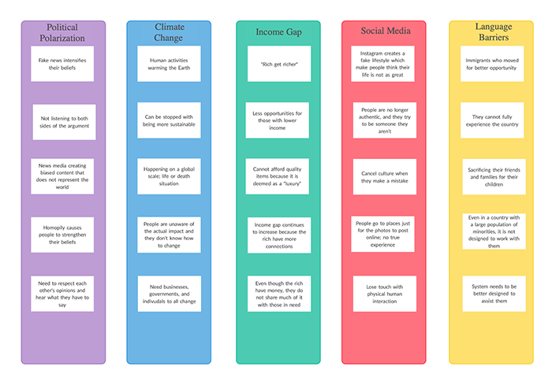

Brainstorming
The affinity mapping activity done in class helped me narrow down the topics I wanted to do. However, during the brainstorming I did on certain topics I was interested in, I found I was more interested in one topic than the other. The personal brainstorm helped me go more in-depth with the topics by thinking of what causes it and how it can be solved. After finishing the brainstorm, I realized that I was interested in "Climate Change" and "Language Barriers." I am passionate and interested in climate change because it an immediate problem that needs fixing, and I want to see what I can come up with on this topic. I am also intrigued with language barriers because it is something that I personally went through with my parents immigrating to the U.S., so I would like to dive deeper into a solution for this. This process was really helpful to decide on my topic because I found some topics harder to find ideas than other topics.